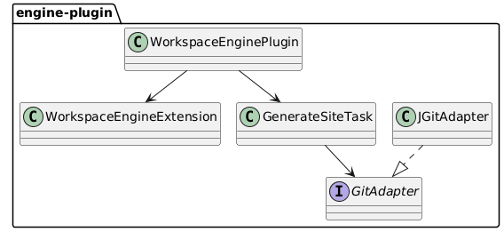
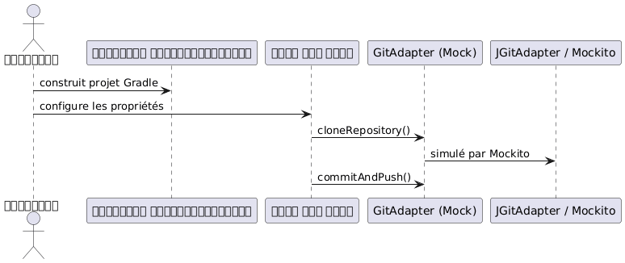

TDD একটি কনফিগারযোগ্য Kotlin Gradle প্লাগইন JBake এবং JGit এর সঙ্গে
প্রকাশিত: 09 July 2025
এই পোস্টটি Kotlin DSL-এ লেখা একটি Gradle প্লাগইনের সম্পূর্ণ ডিজাইন এবং টেস্ট (TDD) পদ্ধতির উপস্থাপন করে। এই প্লাগইন JBake-এর সাথে স্ট্যাটিক সাইটের স্বয়ংক্রিয় génarেশন এবং JGit-এর মাধ্যমে Git-এর স্বয়ংক্রিয় deployment-কে অটোমেটাইজ করে, য সবকিছু কনফিগারেশন YAML ফাইল থেকে শুরু হয়।
লক্ষ্য
একটি গ্রেডল প্লাগইন তৈরি করুন :
-
কটলিন DSL-এ কনফিগারযোগ্য ;
-
সক্ষম :
-
JBake থেকে স্ট্যাটিক সাইট তৈরি করুন ;
-
JGit-এর মাধ্যমে একটি দূরবর্তী Git সংগ্রহস্থলে স্থাপন করুন;
-
CI/CD ওয়ার্কফ্লোকে সংযোজনযোগ্য ;
-
TDD পদ্ধতির অনুসারে পরীক্ষিত
ঘোষণামূলক কনফিগারেশন
এখানে একটি YAML কনফিগারেশনের উদাহরণ দেওয়া হল যা আমাদের DSL-এ মডেল করা উচিত :
bake:
srcPath: "./site/jbake"
destDirPath: "bake"
pushPage:
from: "bake"
to: "cvs"
repo:
name: "trainings"
repository: "https://github.com/pages-content/trainings.git"
credentials:
username: "USERNAME"
password: "SECRET_TOKEN"
branch: "main"
message: "cheroliv.com"এই কনফিগারেশনটি Kotlin DSL-এ ঘোষণাযোগ্য একটি Gradle এক্সটেনশনের মাধ্যমে উপস্থাপিত হয়।
প্লাগিনের আর্কিটেকচার

DSL এক্সটেনশনের সংজ্ঞা
open class WorkspaceEngineExtension {
var outputDir: String = "build/site"
var template: String = "freemarker"
var repoUrl: String = ""
var branch: String = "main"
var message: String = "Generated by engine"
}কাস্টমাইজড টাস্কের সংজ্ঞা
abstract class GenerateSiteTask : DefaultTask() {
lateinit var gitAdapter: GitAdapter
@get:Input abstract val repoUrl: Property<String>
@get:InputDirectory abstract val outputDir: DirectoryProperty
@get:Input abstract val branch: Property<String>
@get:Input abstract val message: Property<String>
@TaskAction
fun run() {
val repo = gitAdapter.cloneRepository(repoUrl.get(), outputDir.get().asFile)
gitAdapter.commitAndPush(repo, branch.get(), message.get())
}
}ইন্টারফেস GitAdapter
interface GitAdapter {
fun cloneRepository(uri: String, directory: File): Repository
fun commitAndPush(repo: Repository, branch: String, message: String)
}JGit এর সাথে বাস্তব বাস্তবায়ন
class JGitAdapter : GitAdapter {
override fun cloneRepository(uri: String, directory: File): Repository {
return Git.cloneRepository()
.setURI(uri)
.setDirectory(directory)
.call()
.repository
}
override fun commitAndPush(repo: Repository, branch: String, message: String) {
Git(repo).use {
it.add().addFilepattern(".").call()
it.commit().setMessage(message).call()
it.push().call()
}
}
}কনফিগারেশন DSL কোটলিন
workspaceEngine {
outputDir = "build/out"
template = "freemarker"
repoUrl = "https://github.com/cheroliv/trainings.git"
branch = "main"
message = "deploy from plugin"
}Mockito দিয়ে ইউনিট টেস্ট
নির্ভরতা
testImplementation("org.mockito:mockito-core:5.12.0")
testImplementation("org.mockito.kotlin:mockito-kotlin:5.2.1")
testImplementation("org.junit.jupiter:junit-jupiter:5.10.0")Git আচরণ পরীক্ষা
class GenerateSiteTaskMockitoTest {
@TempDir
lateinit var tempDir: File
@Test
fun `task should call clone and commitAndPush`() {
val project = ProjectBuilder.builder().build()
val task = project.tasks.create("generateSite", GenerateSiteTask::class.java)
val mockGitAdapter = mock<GitAdapter>()
val mockRepo = mock<Repository>()
whenever(mockGitAdapter.cloneRepository(any(), any())).thenReturn(mockRepo)
task.gitAdapter = mockGitAdapter
task.repoUrl.set("https://github.com/cheroliv/test.git")
task.outputDir.set(project.layout.projectDirectory.dir(tempDir.name))
task.branch.set("main")
task.message.set("test commit")
task.run()
verify(mockGitAdapter).cloneRepository(eq("https://github.com/cheroliv/test.git"), any())
verify(mockGitAdapter).commitAndPush(eq(mockRepo), eq("main"), eq("test commit"))
}
}
উপসংহার
দায়িত্বের বিভাজনের মাধ্যমে`GitAdapter`এই Gradle প্লাগইন ডেভেলপমেন্টে TDD-কে সম্পূর্ণরূপে প্রয়োগ করতে সক্ষম করে :
-
Git কলগুলি বিমূর্ত এবং পরীক্ষযোগ্য ;
-
DSL কনফিগারেশন পরিষ্কার এবং স্পষ্ট ;
-
প্লাগইনটি বাস্তব বাস্তবায়ন থেকে নিরপেক্ষ।
এই পদ্ধতির মাধ্যমে উচ্চ পরীক্ষণযোগ্যতা এবং প্রসারণযোগ্যতা নিশ্চিত হয় (GitHub API, GitLab, ইত্যাদি)।
আগামী পদক্ষেপ
-
JBake প্রজেনারেশনকে একটি`BakeAdapter`
-
ইন্টিগ্রেশন টেস্ট যোগ করুন`GradleRunner`
-
স্বয়ংক্রিয় ফাইল লোডিং সমর্থন`site.yml`SnakeYAML-এর মাধ্যমে